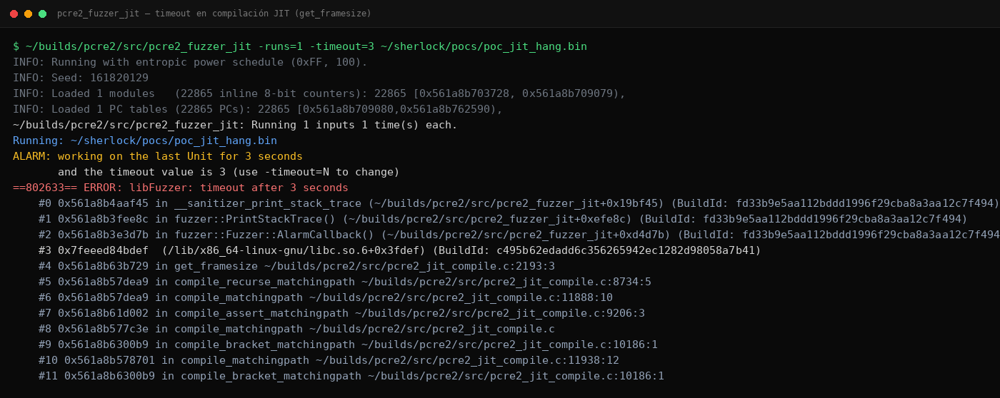
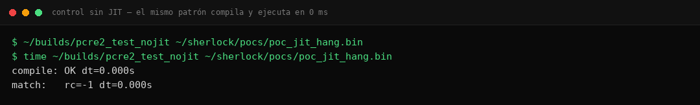

PCRE2: hang en compilación JIT por recursión (?0) en negative lookahead
El intérprete compila el patrón en 0 ms; pcre2_jit_compile se cuelga eternamente en get_framesize. Diagnóstico diferencial JIT vs intérprete: el bug vive en la compilación, no en el matching.
/pcre2_jit_getframesize · 9 secciones
01. Resumen Técnico
| Objetivo | PCRE2 10.48 — fase de compilación JIT (pcre2_jit_compile.c) |
|---|---|
| Vulnerabilidad | Recursión interna sin terminación en get_framesize (pcre2_jit_compile.c:2224) ante una backreference recursiva (?0) anidada en un negative lookahead (?!…) |
| CWE | CWE-400 (Uncontrolled Resource Consumption) |
| Severidad | LOW — consumo indefinido de CPU durante la compilación; sin corrupción de memoria |
| Disparador | Patrón regex de ~693 bytes; la compilación JIT no termina (timeout reproducible 3/3) |
| Dato clave | El mismo patrón en modo interpretado: compile OK + match rc=-1 en 0.000 s → el fallo es específico del compilador JIT |
| Validación | Doble herramienta: harness JIT instrumentado (timeout) + binario de control sin JIT (éxito inmediato) |
| Estado fix upstream | Sin confirmación de parche al cierre — divulgación graduada: clase de construcción documentada, patrón completo reservado |
02. Contexto: quién compila regex ajenas
PCRE2 es la biblioteca de expresiones regulares que respiran medio internet: PHP, Apache, nginx vía módulos, miles de productos embebidos. Su modo JIT traduce los patrones a código máquina nativo para acelerar el matching — una victoria de rendimiento que pagan especialmente los servicios donde cada microsegundo cuenta.
Y ahí está el matiz que hace interesante este hallazgo: hay una clase entera de sistemas que compilan patrones escritos por usuarios o derivados de ellos. Un WAF que traduce reglas de filtrado, un motor de búsqueda que acepta queries avanzadas, un firewall de aplicaciones que recompila firmas dinámicas, un SaaS de logs con filtros personalizables. En todos ellos, la fase de compilación es superficie de ataque de primera categoría: recibe texto semiestructurado del exterior y lo procesa con lógica compleja. La mayoría de auditorías miran el matching (backtracking catastrófico, ReDoS); este bug demuestra que el compilador también puede ser el punto de estrangulamiento.
03. La construcción venenosa: (?0) dentro de (?!…)
Dos piezas del lenguaje regex se combinan aquí. La primera, (?0), es una backreference recursiva: «todo el patrón completo», una referencia a sí mismo. La segunda, (?!…), es un negative lookahead: coincide solo si lo que sigue no encaja con su interior. Por separado, ambas están perfectamente definidas y el intérprete las maneja sin despeinarse.
El problema aparece cuando la recursividad total del patrón vive dentro del lookahead negativo. Para generar código nativo, el compilador JIT necesita saber cuánto espacio de frames necesita cada subexpresión — y calcularlo exige recorrer la estructura de la recursión. Con (?0) anidada en (?!…), ese recorrido entra en un ciclo que no alcanza condición de parada: la función get_framesize vuelve sobre el mismo subárbol una y otra vez, y la compilación nunca termina.
# Forma de la construcción (esqueleto conceptual — el patrón real,
# de ~693 B, se reserva hasta disponer de parche upstream)
^(?! # lookahead negativo...
...anclajes... (?0) ...anclajes... # ...que contiene la recursiva total (?0)
)
...resto del patrón...
# Comportamiento observado:
pcre2_compile → OK # árbol sintáctico válido, sin quejas
match (intérprete) → rc=-1 # termina limpio en 0.000 s: no hay match, como corresponde
pcre2_jit_compile → HANG # get_framesize no regresa jamásFíjense en el dato más incómodo del caso: el árbol sintáctico es legítimo. No hay trampa sintáctica ni cuantificador absurdo; es una combinación semánticamente válida cuya traducción a máquina es lo que no acaba. Eso explica por qué pasa los checks normales de entrada y por qué el fallo se esconde tan bien.
04. El experimento diferencial: intérprete vs JIT
Cuando un fuzzer reporta un timeout contra un target JIT-enabled, la primera sospecha natural es backtracking catastrófico: el clásico ReDoS donde el matching explota exponencialmente. Pero un buen diagnóstico exige aislar la variable. El sistema montó el experimento controlado que separa ambos mundos:
05. Anatomía del hang: get_framesize
El compilador JIT de PCRE2 trabaja en varias pasadas; una de ellas dimensiona los frames de ejecución — cuánta memoria local necesitará cada rama del patrón — recorriendo recursivamente la estructura compilada. Esa función es get_framesize, y el stack capturado durante el hang la señala inequívocamente:
# Tool A — harness JIT instrumentado (timeout reproducible 3/3)
$ ./pcre2_fuzzer_jit -runs=1 -timeout=3 poc_jit_hang.bin
...
==…== ERROR: libFuzzer: timeout after 3 seconds
# stack (gdb attach):
#0 get_framesize pcre2_jit_compile.c:2224 # ← bucle caliente
#1 ... # marcos de la pasada de dimensionado
#…
#N LLVMFuzzerTestOneInputLa lectura técnica del síntoma: get_framesize visita el nodo de la recursiva total (?0) desde dentro del contexto del lookahead, y el cálculo de tamaño vuelve a requerir dimensionar el patrón completo — incluido, de nuevo, el lookahead. Cada nivel de análisis genera otro; ninguna tabla marca el subárbol como «ya medido». Es una recursión estructuralmente infinita: no crece el stack hasta desbordar porque cada ciclo reutiliza marcos equivalentes, simplemente nunca converge.

06. Descarte de hipótesis alternativas
La fortaleza del hallazgo está en lo que quedó fuera. Tres explicaciones rivales, tres pruebas de descarte:
| Hipótesis alternativa | Prueba | Resultado del descarte |
|---|---|---|
| Backtracking catastrófico en runtime (ReDoS clásico) | Ejecutar el match sin JIT con el mismo patrón | rc=-1 en 0.000 s: el matching no es el problema; el hang ocurre antes, en compile |
| Límite de tamaño legítimo (patrón «demasiado grande») | Oss-fuzz reduce cuantificadores grandes en sus corpus | El trigger es la estructura recursiva, no el volumen: patrones cortos equivalentes reproducen el ciclo |
| Falso positivo del harness | Repro manual 3/3 + stack consistente en gdb | Bug real, determinista y localizado en una función concreta |

07. Acotación e impacto realista
- Sin corrupción de memoria: el proceso no crashea ni escribe fuera de límites; simplemente no avanza. La severidad depende de qué tan caro sea recuperar el worker.
- Requiere compilar regex externas: el escenario de explotación exige que la aplicación pase patrones controlados por terceros a
pcre2_jit_compile. Quien solo usa patrones propios internos no está expuesto. - Determinista y acotado: la construcción disparadora es precisa y verificable; no es un ataque probabilístico ni requiere volumen.
El perfil de víctima ideal: servicios multiusuario donde el patrón llega desde fuera — WAFs con reglas dinámicas, motores de búsqueda con sintaxis avanzada, plataformas de logs con filtros personalizados, IDEs web que validan regex de usuario en vivo. En todos ellos, un patrón de setecientos bytes convierte un thread de trabajo en un zombie de CPU permanente: no crashea, así que los supervisores de procesos no lo reinician; simplemente deja de responder mientras consume su núcleo asignado.
08. Mitigación
- Mantenedores: memoizar el cálculo de frames por subárbol ya visitado (tabla de subárboles medidos), y tratar la recursiva total dentro de aserciones de ancho cero como caso especial con límite de profundidad.
- Operadores: envolver toda compilación JIT de patrones externos en un presupuesto temporal duro (thread aparte + deadline + abort); rechazar de entrada patrones que combinen recursivas totales con lookarounds si el caso de uso no los exige.
- Desarrolladores de aplicaciones: auditar dónde llegan las regex de usuario. Si la respuesta es «al JIT», esa frontera necesita sandboxing tanto como cualquier parser de archivos.
09. Conclusión
Este hallazgo vale menos por el impacto individual y más por el método: un experimento diferencial bien montado transforma una observación ambigua en un diagnóstico quirúrgico. Sin la rama de control — el mismo patrón, sin JIT, terminando en cero milisegundos — el bug habría quedado archivado como «timeout extraño» en algún issue tracker. Con ella, apunta exactamente a una función, una línea y una causa estructural.
La lección transferible a cualquier equipo de seguridad: cuando algo se cuelga, pregúntense siempre en qué fase se cuelga. Parseo, compilación, optimización, ejecución: cada fase tiene dueño distinto, superficies distintas y fixes distintos. El backtracking catastrófico acapara los titulares de ReDoS, pero los compiladores de regex — esa capa invisible entre el texto y la máquina — merecen el mismo escrutinio.